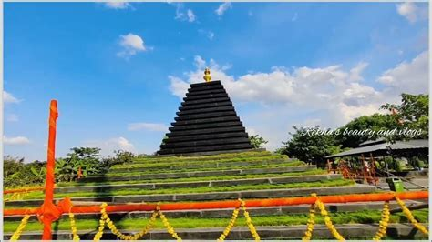

Srisailam is a census town in Nandyal district of the Indian state of Andhra Pradesh. It is the mandal headquarters of Srisailam mandal in Atmakur revenue division. It is located about 160 kilometres (99 mi) from the district headquarters Nandyal, 180 kilometres (112 mi) from Kurnool, and it is located about 264 kilometres (164 mi) from Vijayawada. The town is famous for the Mallikarjuna Jyotirlinga Temple and is one of the holy pilgrimage sites for the Shaivism and Shaktism sects of Hinduism. The town is classified as both a Jyotirlinga and a Shakta pitha.
MAHANANDI
Mahanandi is a village located east of the Nallamala Hills of Nandyal District, Andhra Pradesh, India. It is surrounded by forests. Within 15 km of Mahanandi, there are nine Nandi shrines known as Nava nandulu. Mahanandi is one of the Nava Nandis. The Mahanandiswara Swamy Temple, an important shrine, is located here. This ancient temple dates back over 1,500 years. The inscriptions of 10th century tablets speak of the temple being repaired and rebuilt several times
GANDIKOTA
Gandikota is a village and historical fort on the right bank of the Penna river, 15 km from Jammalamadugu in Kadapa district, Andhra Pradesh, India. The fort was the centre of power for various dynasties, such as the Kalyani Chalukyas, Pemmasani Nayakas, and the Golconda Sultanate.A sand fort was constructed by Kaka Raja, Vassals of Kalyani Chalukya rulers. Various additions of Islamic architecture were made during subsequent Muslim rule. The fort is a centrally protected monument of Archaeological Survey of India

GADIVEMULA
Gadivemula is situated 27 km from district headquarter Nandyal. It has good transportation from all over the towns surrounded like Nandyal, Nandikotkur, Atmakur and Kurnool
BELLUM CAVES
The Belum Caves, located in Nandyala district of Andhra Pradesh's Rayalaseema region, is the second largest cave system on the Indian subcontinent, known for its speleothems, such as stalactite and stalagmite formations. The Belum Caves have long passages, galleries, spacious caverns with fresh water and siphons. This cave system was formed over the course of tens of thousands of years by the constant flow of underground water from the now-disappeared river Chitravathi.
YAGANTI
Yaganti Temple, also known as Sri Yaganti Uma Maheswara Temple, is a significant Shiva temple located in the Nandyal district of Andhra Pradesh, India, built during the Vijayanagara Empire.Constructed by King Harihara Bukka Raya of the Sangama Dynasty in the 15th century, the temple reflects the rich cultural heritage of the area. The temple is set in the picturesque Yerramala hills and is surrounded by caves, making it a popular tourist destination in the region.
AHOBHILAM
Ahobilam, the sacred site where Lord Narasimha vanquished Hiranyakashipu, ensuring the protection of Prahalada. Goddess Mahalakshmi, took the form of Chenchu Lakshmi, united with the Lord and married him among the Chenchu, a tribe of hunters dwelling in the hills and united with lot.Ahobilam is a town and holy site in the Allagadda mandal of Nandyal district in the Indian state of Andhra Pradesh.[1] It is surrounded by the Eastern Ghats with several mountain hills and gorges.